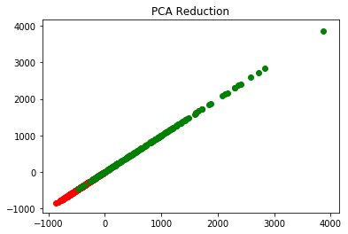

PREPROCESSING TECHNIQUES
The Preprocessing techniques used are given below
NORMALIZATION
To convert numeric values in a column to a common scale without distorting differences in the range of values.
STANDARDIZATION
Convert attributes with Gaussian distribution and with varying mean and standard deviation to standard Gaussian distribution with mean of 0 and standard deviation of 1.
PCA
Principal Component Analysis (PCA) is a dimensionality reduction technique which reduce the number of dimensions (i.e. variables) in a dataset while retaining as much information as possible
LDA
Linear Discriminant Analysis (LDA) is also a dimensionality reduction technique which reduces the number of dimensions (i.e. variables) in a dataset while retaining as much information as possible
PCA

LDA